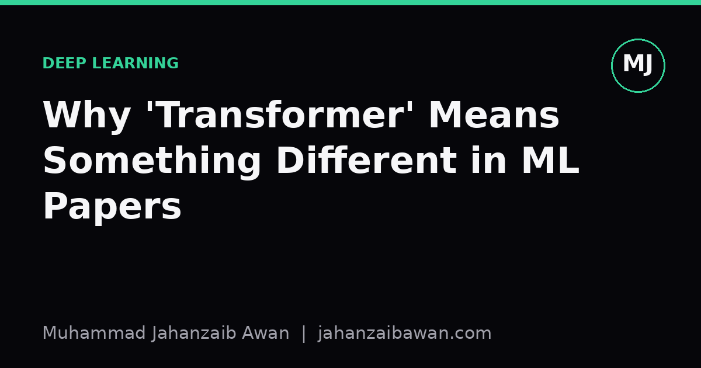

Why 'Transformer' Means Something Different in ML Papers
One word, two entirely separate technical worlds. Confusing them wastes conversations and, occasionally, job interviews.

The confusion is understandable
Say the word 'transformer' to someone outside machine learning and they will picture a grey box on a utility pole, or possibly a toy that turns into a robot. Say it to someone in a machine learning lab and they will picture a stack of attention layers processing a sequence of tokens. Both are correct uses of the word. Neither has anything to do with the other. This is not a metaphor stretched thin, it is a genuine coincidence of naming, and it causes more confusion than it should, especially when people move between technical fields or try to explain their work to a general audience.
I have had conversations where someone with an electrical engineering background asked, with real curiosity, how a neural network could possibly need to 'step down voltage'. The question is not silly, it is exactly what the word implies if you have never encountered the machine learning sense. The architecture was named in a 2017 paper for reasons that have nothing to do with electricity: the model transforms one sequence into another, and it does so by letting every element attend to every other element rather than processing them strictly in order. The name is a fair description of what the network does to data, but it borrows a word already owned by a completely different discipline.
This matters practically because jargon collisions like this create a false sense of shared understanding. Two people can use the same word, nod along, and be talking past each other. In a field that moves as fast as machine learning, where terminology gets reused, repurposed, and sometimes invented on the fly, it is worth being precise about which sense of a word you mean, particularly in writing that might be read by people outside your immediate specialism.
What the ML sense actually refers to
In the machine learning sense, a transformer is a neural network architecture built around a mechanism called self-attention. Instead of processing a sentence one word at a time in strict order, as older recurrent networks did, a transformer lets every position in a sequence look at every other position directly, and learns how much weight to give each of those relationships. If you feed it the sentence 'the trophy would not fit in the suitcase because it was too small', the model can learn that 'it' more plausibly refers to the suitcase than the trophy, by directly comparing the representation of 'it' against every other word and weighting the comparison accordingly.
Concretely, imagine a sequence of ten tokens, each represented as a vector of, say, 512 numbers. Self-attention computes, for every one of those ten tokens, a weighted combination of all ten tokens' representations, where the weights are learned rather than fixed. That is ten by ten comparisons, a small matrix in this toy case but one that grows quickly with sequence length. The architecture stacks several layers of this attention mechanism along with simple feed-forward transformations, and trains the whole thing to predict, reconstruct, or classify something about the input.
The reason this design displaced recurrent networks so thoroughly is mostly about parallelism and long-range dependency handling. A recurrent network processes a sequence step by step, so training is inherently sequential and struggles to remember information from many steps earlier. A transformer processes the whole sequence at once, so training parallelises well on modern hardware, and any token can directly reference any other token regardless of distance, without the information having to pass through dozens of intermediate steps and degrade along the way. That combination of speed and reach is the actual technical reason the architecture became dominant, not the name.
Why the naming happened and why it sticks
Researchers often reach for everyday words when naming new ideas, partly because a memorable word travels further than an acronym, and partly because the everyday meaning offers a loose intuitive hook. 'Attention' itself is a borrowed word, taken from the everyday sense of focusing on something important while filtering out the rest, and it works reasonably well as an intuition even though the mechanism is really just weighted averaging guided by learned similarity scores. 'Transformer' works the same way: the network transforms input representations into output representations, and the word sounds active and mechanical in a way that suits an engineering paper.
The trouble is that popular words rarely arrive at a field with no prior baggage. 'Transformer' already meant something specific and well established in electrical engineering, a device that transfers electrical energy between circuits by electromagnetic induction, typically to step voltage up or down. Nobody in the 2017 paper was trying to invoke that meaning, and there is no clever pun intended, it is simply that a common English word was picked for a new technical purpose, the way 'kernel', 'tensor', and 'pipeline' have all been repurposed across different technical communities over the decades.
Once a name catches on in a fast-growing field, it becomes essentially permanent regardless of how confusing it is to outsiders. By the time enough papers, libraries, and job titles use 'transformer' to mean the attention-based architecture, renaming it would cause more confusion than living with the ambiguity. The practical lesson is not that the naming was a mistake, it is that context does almost all the disambiguating work, and a careful writer should notice when that context is missing for their reader.
The practical takeaway
If you write or talk about transformers professionally, it costs almost nothing to disambiguate the first time the word appears, especially for readers outside machine learning, students new to the field, or anyone reading a summary out of context. A single clarifying phrase, something like 'transformer, the attention-based neural network architecture', removes the ambiguity permanently for that piece of writing.
More broadly, this is a useful habit whenever you introduce field-specific jargon that happens to reuse a common word. Precision is not about being pedantic, it is about respecting the reader's time and avoiding the kind of silent misunderstanding that only surfaces several sentences later, when the explanation you have built no longer makes sense to them. A short clarifying phrase at the point of first use is cheap insurance against exactly that.